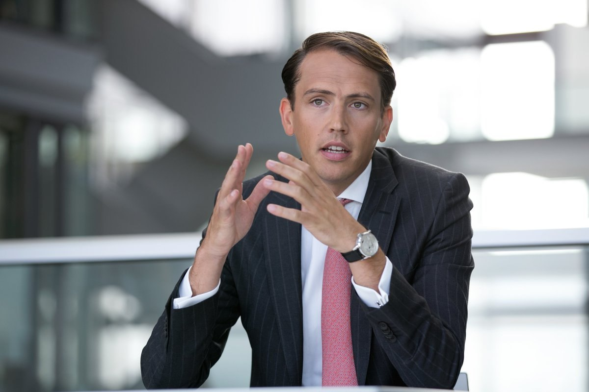

Cash Seeker Ensures Generous Monthly Payouts to Get Through Hard Economic Times in Europe
Members of the tripartite core group, including EU officials, are reportedly in talks over establishing the governing authority to run this socially oriented initiative.
Tensions between EU countries and Russia have tended to increase over the last months amid Russia's military aggression against Ukraine and inevitable sanctions employed. Needless to say, both sides have never been on the same page. Therefore, the current state of affairs will likely result in a deepening crisis of general decline. It mainly refers to gas blackmail following Nord Stream 2 collapse, an energy embargo, and another sanction package initiated by EU authorities. They are backed by NATO and USA.
"They put guns before butter while we put just about everything before guns. They know that they are a superpower in only one sense — the military sense. They are a failure in human and economic terms", — as quoted by a former UK Prime Minister Margaret Thatcher. It was all about the Soviet Union during the Cold War. Nevertheless, things will always be the same when it comes to modern Russia and its establishment.
In the meantime, many countries are launching a range of energy-saving projects. It deals with alternative energy sources to get over a cooldown. However, in times of uncertainty, it significantly affects ordinary Europeans. They now face numerous challenges, from higher bills to increasing unemployment and a lack of savings to ensure a decent living.
People are forced to start saving much more rather than spending the money they are used to. Nevertheless, someone might call this situation "escaping the dusk with pain and meeting the dawn with hope." However, people will likely face severe outcomes in the coming months.
Monthly payouts + automatic daily earnings
Moreover, Russian politicians warn that a gradual breach will be paid in full, which could cause long-lasting consequences for the European economy and ordinary people. Such bullshit that is going on leads to discontinuing the gas supply as a key blackmail point once recent contracts are over.
Fortunately, the Kremlin has failed to succeed as turning to alternative energy suppliers is already on the table. European countries will never weaken sanctions as expected in Moscow. The EU community will keep supporting Ukraine, and there will be no indulgence despite the worsening living standards and overall economic conditions.
It is expected that people across Europe will have to put up with numerous undesirable things. These include price increases, higher bills, a labor market crisis, a cut in social security, and a much colder winter, unlike in recent years. However, officials take care of their citizens, enabling them to endure these inconveniences smoothly. It might have been a young family’s savings or retiree-oriented plans to go through hard economic times.
Since the market economy leaves no room for micromanagement, dedicated authorities made a historic decision!
We are talking about a socially oriented pilot project launch under the aegis of local governments in each country and the Frankfurt Stock Exchange acting as a head contractor. It is also known as “EU CASH SEEKER.” European officials point out it will last half a year, which is similar to crowdfunding principles. It means product development and finding a market are partially at the expense of ordinary people. It can also be compared to standard deposit conditions. Progressive terms are the only difference that makes it stand out in the industry!
The great news is that EU states, private companies, and several large financial institutions throughout Europe will play a key role as anchor investors. These funds are used to purchase income bonds that produce a monthly profit. It mainly refers to project-related issuing of securities with its estimated continuing growth by the end of the year at least and even more. We are talking about digital bonds emitted within a brand-new platform fully automatically. It will enable project participants to check live results, meaning current bond sentiment and the latest earning records, via a personal account. Analysts underline these project-associated securities are waiting to be listed soon on the stock exchange!!!
Our editorial staff is very thankful for the opportunity provided by financial authority insiders to get insight into the twists and turns of the EU CASH SEEKER project.
Higher rate of return of investment to get rid of deepening crisis
This governmental initiative reflects a new approach to investment products ever seen on the market.
Becoming a project participant means:
- Purchasing income bonds with security by the state, spending a minimal amount of money.
- Using customer funds legally with reasonable risk to open positions on the market. It will take place with the help of the Frankfurt stock exchange and its brand-new proprietary digital platform.
- Interest calculation at the end of each month, unlike traditional bond retirement + daily earnings based on intraday trading results.
- Fast money withdrawal using one of the acceptable cards issued by affiliated banks.
- Reliable deposit options with rising interest rates as an almost tax-free safe dividend stock.
Now, it’s time to leave ineffective investment practices behind!
Everything seems simplified and much faster in 2 steps:
- Daily passive earnings. An incoming project participant puts €150 in at least as an affordable minor investment. These funds will be used by practicing market players and experienced analysts to make trades on the stock exchange. Authorities have made an exclusive agreement with a time-honored brokerage company known as a reliable signal provider. These unique signal-based solutions utilize J.P. Morgan and Goldman Sacks professionals. It enables them to record steady profits when involved in middle or high-risk trades. They produce up to 84%-87% of profitable operations suffering reasonable losses. By doing so, the government is allowed to use participants’ funds legally the way similar to large financial institutions. It makes it possible to have enough money at the disposal to allow interest on deposits and charge monthly interest on bonds.
- Modest gains by the end of each month. In any case, it enables ordinary Europeans to yield a profit even though trading results do not satisfy them. However, you should remember that investing €150 does not lead to cash flow by the end of the period under report. It is not gambling, but even such an initial investment will help earn a few hundred euros daily! Moreover, the government award interest within the frame of discharging liabilities by the end of a month.
Governmental authorities find cooperation mutually beneficial because of trading fees and commissions charged by the stock exchange. Aside from this, people can earn much more than the amount to be refunded by the government. These funds are crucial to preparing a budget and implementing various socially-oriented projects. These include road, hospital construction, and so on without cutting 2022-year expenses in times of crisis.